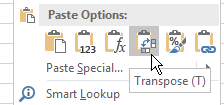

The ability to fit a function to data in Excel is fun and all, but it's pretty useless in the sciences if you can't attach a measure of uncertainty to those Solver estimates of Pmarea, phi, and theta.
We might, for example, want to compare the parameters between leaves that grow in direct sunlight and those that grow in the shade. Many trees grow in dense forests, such that the leaves at the top of the tree are the only ones that routinely receive direct sunlight, while leaves near the base may be in the shadow of leaves above, or from neighboring trees most or all of the day. A tree may respond to this by producing leaves with different structures at the top and bottom of the tree to take full advantage of the light that's available. Leaves from the top of a tree will generally not be light limited, but being in the sun all day makes evaporation rates go up. Leaves from the bottom of the tree need to make efficient use of the light available, but will be in a cooler, more shaded environment that will expose them to lower rates of water loss. Since leaves at the top and leaves at the bottom operate in different environments they may show differences in their photosynthetic activity.
|
From the graph to the left it's clear that when tested at consistent, known light levels by the machine, leaves from the tree top have higher net photosynthesis than leaves from the base of the tree when light levels are high. However, below about 500 on the x-axis this changes - leaves from the bottom are more effective at photosynthesizing when light levels are low.
|
If you switch to the "Top" sheet of the Excel file for this exercise for a moment, you'll see that the estimates you obtained for bottom leaves are already plotted on a graph, along with estimates I calculated based on measurements from top leaves. The two curves are not identical, and we can use the differences in estimates of the model parameters to better understand why the curves differ. To make this comparison we need standard errors for the bottom leaf parameter estimates.
Solver doesn't provide us with this information, but we can use finite difference approximation to get standard errors.
Finite difference approximation takes advantage of the sensitivity of the function to change in its parameters. We will alter each of the estimated parameter values one at a time by a very small amount, then see how much change in predicted value we get with slightly different parameter value (the "deltas"). We can then use the difference in the predicted values per unit change in the parameters to calculate P, which is a matrix of sums of squares and cross products for the deltas. We will then use values from the inverted P matrix to calculate the standard errors for each of the three parameters we estimated.
This requires several steps.
Step 1. Set up the worksheet to do the finite difference approximation.
Switch back to the "Bottom" sheet to calculate standard errors for your estimates.
a. Copy the entire parameter block (A15:B18) and paste it below, starting in cell a22 (if it's all set up correctly this should not overwrite anything).
b. In cell C15 type "Parameter multiplier", and in cell C16, C17, and C18 enter a 1. These are the values we will change to produce the desired tiny amount of change in each parameter.
c. In cell B16 type =b23*c16. This multiplies the Solver estimate for phi in cell B23 by the parameter multiplier in C16 - nothing to see yet, but we'll now be able to change the multiplier by a small amount and have Pnet expected values change.
Copy and paste this to B17 and B18. This will now make the parameters in cells B16, B17, and B18 depend on the multipliers in C16, C17, and C18.
d. To calculate how much the predicted values change when we change the parameters we first need to record our current set of predicted values, which are based on Solver's estimates of the parameters.
Copy Pnet Predicted (c1:c9) and paste-special only the values to column D. Re-name it "Best fit" in cell D1.
e. Label F1 "dY/dPhi", G1 "dY/dPmarea", and H1 "dY/dTheta". These columns are where we will store the change in predicted value per unit change in parameter.
f. In cell f2 write the formula =(c2-d2)/(phi-b$23). I know, you just got a divide by zero error, but that is okay for the moment. The formula calculates the change in Y divided by the change in the Phi parameter, and since we haven't changed Phi yet both the numerator and denominator are 0, which is where the divide by zero error comes from. This will go away when we change the multiplier and the value for phi changes.
Copy and paste the formula from f2 to the rest of the cells in this column (f3:f9).
g. In cell g2 write the formula =(c2-d2)/(Pmarea - b$24). Copy and paste to g3:g9.
h. In cell h2 write the formula =(c2-d2)/(theta - b$25). Copy and paste to h3:h9.
Step 2 - Calculate the finite differences.
Now that you have everything set up, you're ready to change the parameters a tiny amount, one at a time, and record the change in predicted value per unit change in the parameter.
- Change the "Parameter multiplier" for Phi to 1.000001. You'll see that this increases the Phi parameter in cell B16 by a tiny amount (one millionth of its value), which changes the predicted Pnet's in column C, and causes the dY/dPhi's in F to calculate (they should no longer be "divide by zero" errors).
- Copy the cells in f2:f9, right-click and "Paste Special" only the values - you are changing these cells from cell formulas to numeric values, so you're copying the cells and pasting their cell values over them. You now have the first set of "deltas" (that is, changes in the curve with a small change in the Phi parameter) as values
- Change the multiplier for Phi back to 1
The dY/dPhi column is no longer made up of cell formulas, so you should not have the values go back to divide by zero errors when you set the multiplier back to 1.
b. Now do the same set of steps for Pmarea - change the multiplier for Pmarea to 1.000001, copy and paste-special the values in the dY/dPmarea column (cells g2:g9), then change the multiplier back to 1.
c. Finally do the same for theta - change the multiplier to 1.000001, copy and paste-special the values in the dY/dtheta column (cells h2:h9), then change the multiplier back to 1.
Step 3 - Calculate the P matrix, and invert it.
Now that you have the changes in predicted values per unit change in each parameter, you can use these to calculate the P matrix. P gives sums of the squared deltas in the main diagonal, and their cross-products in the off diagonal.
All we need to do to get our P matrix is to transpose the deltas we just calculated, then multiply the transposed delta matrix by the untransposed delta matrix.
We can then invert P, which will give us the numbers needed to calculate standard errors of our parameters.
a. Copy the dY's (including their column labels) in f1:h9, and paste-special transposed into cell j1 - that is, select cell j1, right-click, and select this paste option:

You should now have a copy of the dY's with the columns converted to rows.
b. Next you will matrix multiply the transposed dY matrix by the dY matrix get the sums of squares and cross-products matrix, P.
- In cell F12 type "P matrix".
- Select cells F13:H15, which is a 3x3 block of cells, for the output. We will be multiplying a matrix with three rows by a another matrix with three columns, so the output will be a 3 x 3 matrix.
- With the cells selected, type =mmult(k1:r3, f2:h9). Remember to CTRL+SHIFT+ENTER to make this an array formula (which is required for matrix functions in Excel). Remember, matrix multiplication is not commutative, so the order matters - the transposed matrix has to come first.
The result will be sums of squares and cross-products for the deviations we calculated in F2 through H9.
c. Now we need to invert the matrix.
- In cell F17 type "Inverted P"
- Select cells F18:H20, and type =minverse(f13:h15), and CTRL+SHIFT+ENTER. This will give you the inverse of the P matrix. Your P matrix and inverse P matrix will look like this (don't worry if they're different in the third or fourth decimal places, these are numerical methods and small differences in the solutions can happen)
Step 4 - Calculate the standard error of residuals for the best-fit model.
Before we can use the inverted P matrix to calculate standard errors, we need the standard error of the curve fit overall, which is calculated from the sum of squared residuals. Once we have this we will use it, along with some of the elements of the inverted P, to calculate standard errors of each of the parameters.
- In cell B12 type "SE"
- In cell C12 type =sqrt(c11/(8-3))
This is the formula for the standard error of the fitted curve, based on the sum of squared deviations in c11, and our model degrees of freedom. We have 8 light levels (n = 8), and are estimating three parameters, so the degrees of freedom are 8-3 = 5.
Step 5 - Calculate the standard errors of the parameter
estimates.
a. In cell C22 type "SE". In cell C23 type =c12*sqrt(f18). This multiplies the standard error of Y we just calculated by the square root of the entry in the inverted P matrix that corresponds to the Phi parameter.
b. In cell C24 type =c12*sqrt(g19). This is the standard error for Pmarea.
c. In cell C25 type =c12*sqrt(h20). This is the standard error for Theta.
Step 6 - compare top leaves to bottom leaves.
If you switch back to the "Top" sheet, you'll see that this entire analysis has been done for you in the "Top and Bottom Compared" area. If you put everything in the right place in the Bottom sheet, you should see the following:
- The graph shows both lines plotted.
- The parameter estimates for Bottom leaves in cells L18, L19, and L20 of the Top sheet should match the estimates in the Bottom sheet.
- The SE's for the bottom leaf parameters should be in cells L24, L25, and L26 of the Top sheet, and should match the standard errors you calculated in the Top sheet.
- There should be t-values and p-values for comparisons of bottom and top leaves for each parameter in M24-N26.
Each t-value is the difference between the parameter estimates divided by a pooled standard error. P-values come from comparing the observed t-value to a t-distribution with 10 degrees of freedom (5 for each leaf). Consider the parameters for top and bottom leaves to be different if the p-values are less than 0.05.
Assignment
In addition to the completed Bottom worksheet, starting in cell J28 of the Top sheet answer the following questions:
a. Which kind of leaves (top or bottom) had a higher Pmarea? Does the graph reflect this difference between the leaf types? Explain how you know.
b. Which leaf type (top or bottom) had the highest quantum yield (phi)? What does this tell you about which type of leaf needs to be more efficient in using light?
c. How do these two different parameters translate into the net photosynthesis differences you see in the graph? Specifically, which kind of leaf has higher photosynthesis at low light levels (light = 50, 100, 250)? Which kind of leaf has higher photosynthesis at high light levels (light = 500 or higher)? Why do leaves from the top of the tree have less efficiency in their use of light, but still end up having the highest net photosynthesis at high light levels?
That's it! Save and upload your Excel file.